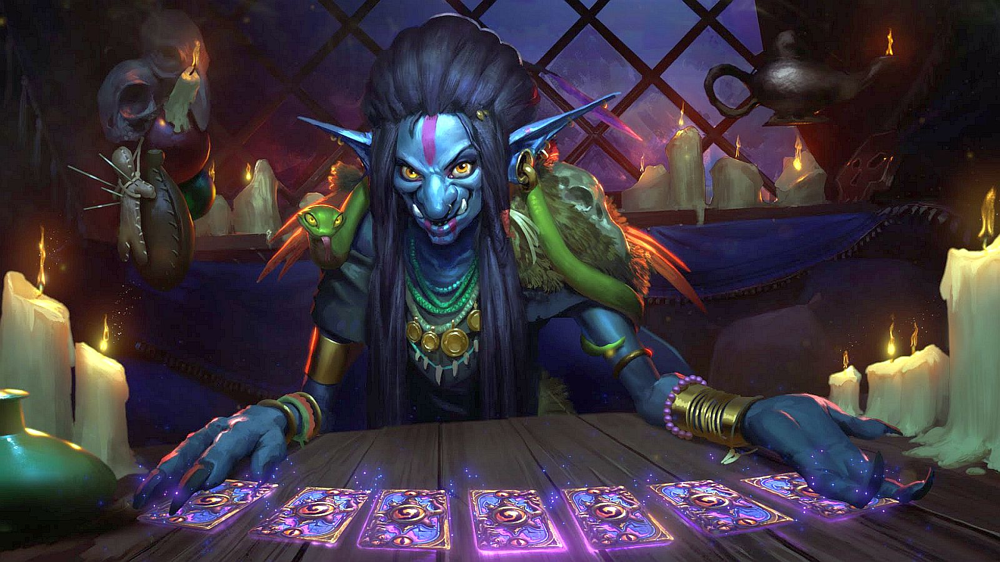
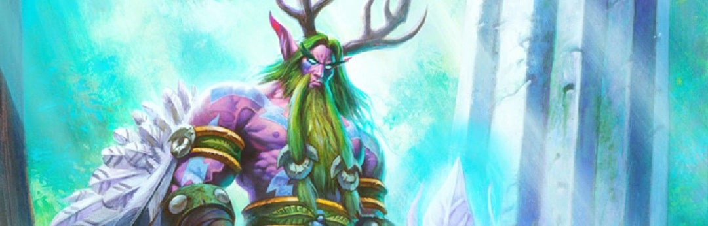
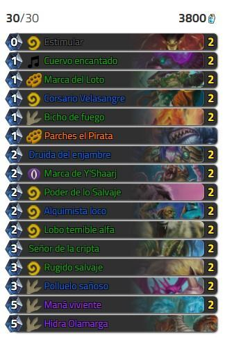
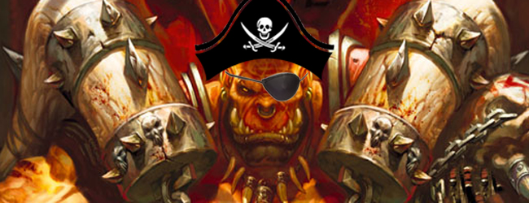
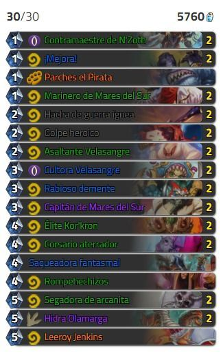
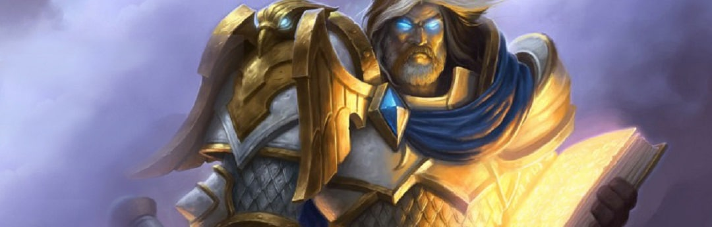
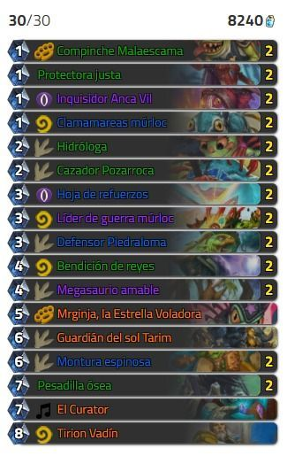
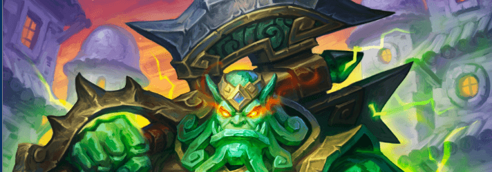
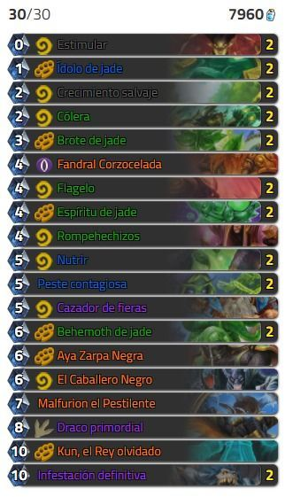

Los mejores mazos de Hearthstone
Los mejores mazos de Hearthstone

NOTA: Todos estos mazos han sido actualizados con la última expansión de agosto de 2017: Caballeros del Trono Helado /Knights of the Frozen Throne (KFT) en inglés y actualizados tras el nerfeo a la clase druida en septiembre de 2017.
 Introducción
Introducción

En Hearthstone existen una gran cantidad de cartas y clases por lo que a veces puede resultar complicado elaborar un buen mazo con el que acabar con tus oponentes. No obstante hemos recorrido todos los foros y webs de internet y comparado estadísticas y ratio de victorias para confirmarte cuáles son los mazos más rotos y cómo podrás replicarlos para ganar en tus partidas.
Druida Aggro Token

Porcentaje de victorias: aproximadamente 54%.
Este mazo es el mejor mazo para el Druida con el que incluso los principiantes podrían ganar ya que rompe bastante el meta del juego. Con él podremos hacer una cantidad importante de daño a nuestros enemigos y mantener la presión sobre ellos durante toda la partida. Se trata además de uno de los mazos más agresivos del juego.
La expansión de Knights of the Frozen Throne no ha hecho más que mejorarlo, con la inclusión de nuevas cartas, por lo que podríamos estar hablando de uno de los mazos más OP en Hearthstone.
 Mazo
Mazo

Estrategia y consejos
Este mazo basa mucho su estrategia en lo que se conoce como técnica bola de nieve, es decir, consiste en sacar muy rápido todos los minions débiles posibles y potenciarlos para conseguir que sean criaturas difíciles de matar. Como una bola de nieve que cada vez se hace más grande. Por ello y para explicar la estrategia de juego con este mazo es necesario centrarse en la fase de selección de cartas y con cuáles quedarnos al comienzo
Actualmente este mazo se encuentra nerfeado, ya que antes se beneficiaba demasiado de la carta estimular, la cual daba una gran ventaja al inicio de la partida, no obstante aunque el poder de estimular se ha reducido, sigue siendo una excelente opción y ahora las partidas estarán más balanceadas.
Para la fase de preparación de cartas, será importante contar con el corsario Velasangre, el cual obtiene su importancia gracias a Parches el pirata, y también podrían ayudarnos a tener un buen comienzo, bicho de fuego, cuervo encantado (una carta excelente con la que empezar en cualquier situación) y druida del enjambre, ya que puede ayudarte a proteger a tus esbirros sobre la mesa.
Marca de Y'Shaarj solo es conveniente quedárnosla al comienzo de la partida si la combinamos con cuervo encantado y lo mismo pasa con polluelo sañoso una carta muy poderosa, pero con la que solo deberemos quedarnos si creemos que nuestro oponente no podrá hacer frente a ella en su siguiente turno.
Guerrero Aggro Pirata

Porcentaje de victorias: aproximadamente 53%.
Se trata de un mazo de golpe relámpago, con el que podrás meter presión a tus enemigos desde los primeros minutos del juego, ya que se basa en la generación de esbirros piratas con armas y sinergias al principio del juego para presionar a los rivales. Se trata de un mazo muy controvertido ya que es capaz de hacer que las partidas duren muy poco. Sin embargo gasta mucho maná por lo que hay que jugarlo con cabeza.
Ten cuidado de no potenciar demasiado a tus esbirros si pueden ser destruidos con una sola carta o malgastarás los potenciadores fácilmente.
Un combo de inicio de partida formado por parches el pirata, el ccontramaestre de N'Zoth, y el marinero de mares del sur puede garantizar un buen comienzo de partida y de control de mesa.
Date cuenta de que el corsario aterrador se puede invocar por 0 de maná si tenemos el hacha de guerra ígnea equipada y potenciada con ¡mejora!.
Mazo

Estrategia y consejos
A pesar de resultar un mazo muy fuerte y con el que dominar rápido, tiene su punto débil en que gasta mucho maná por lo que hay que jugarlo con cabeza, ya que si gastamos nuestros recursos en generar esbirros y armas y nos los destruyen con cartas que simplemente los inutilizan al instante, como reptador golakka , moco del pantano ácido, moco glutinoso o Harrison Jones, estaremos vendidos.
Para poder empezar bien, deberemos procurar tener entre nuestras cartas algunas de las siguientes: el contramaestre de N'Zoth, el marinero de mares del sur, el hacha de guerra ígnea, asaltante Velasangre y el corsario aterrador e incluso ¡mejora!.
Paladin Múrloc

Porcentaje de victorias: aproximadamente 53%.
El paladín de rango medio, es uno de los mazos más clásicos sin embargo el mix que se ha conseguido con los múrlocs, a partir de la expansión de Un’ Goro le ha dado un soplo de aire fresco que además refuerza uno de sus puntos débiles, (la lentitud) al permitirle invocar relativamete rápido a estos esbirros escamosos, mientras mantiene intacto su potencial a mitad/ final de la partida.
Mazo

Estrategia y consejos
Este mazo de paladín combina lo mejor de 2 mundos, por ello dominarlo puede requerir un poco de experiencia, y dependiendo de la situación, se podrá jugar de un modo o de otro.
Dependiendo del oponente, podremos optar por atacar rápidamente con nuestro ejército de múrlocs o jugar de una manera más pausada, aunque para la fase de preparación de cartas siempre sería conveniente contar dentro de lo posible con: protectora justa, inquisidor anca vil, clamamareas múrloc, cazador Pozarroca y la hidróloga. Y si ciertas condiciones se cumplen también podríamos optar por: líder de guerra múrloc o la hoja de refuerzos para potenciar a los esbirros sobre el tablero.
Una de las mayores ventajas de este mazo, es que permite adaptarse rápidamente a los cambios y diferentes situaciones que tengan lugar durante la partida ya que puedes llenar la mesa de múrlocs, jugar más lento para ganar poder, cambiar a daño letal, etc.
El paladín de medio rango, fusionado con Murlocs, es un mazo perfecto para los que prefieren improvisar y jugar de forma diferente en función de la situación y con el que además nunca te aburrirás.
Druida Jade

Porcentaje de victorias: aproximadamente 51%.
Se trata de uno de los mazos más populares y usados en el juego y uno de los más poderosos desde siempre. Aunque ha ido variando según se han ido sacando actualizaciones, sigue basándose en el mismo principio, crear y crear más golems o monstruos de jade con los que aplastar en número a nuestros enemigos, para esto es de especial importancia usar la carta ídolo de Jade, que bien empleada a mitad-final de la partida puede garantizar la victoria, tan bueno es este mazo que ha sufrido varios nerfeos con el tiempo y aun así sigue dando pelea.
Mazo

Estrategia y consejos
El druida de jade puede ser débil contra mazos agresivos y rápidos pero para ello será muy importante jugar la carta peste contagiosa para contener a los rivales más lanzados y ganar tiempo para crear más esbirros de jade, ya que el druida de jade alcanza su verdadero potencial a mitad de la partida, por lo que el comienzo puede resultar lo más complicado.
Para la fase de preparación de cartas, deberíamos intentar quedarnos con estimular, crecimiento salvaje y brote de jade, cartas con las que ir ampliando nuestras reservas de maná. Dejando Ídolo de jade para más adelante y nutrir en caso de que nos enfrentemos a un oponente que trate de mantener la presión sobre nosotros desde el minuto 1, ya que es la debilidad de este mazo.
En la mayoría de combates tu objetivo será "rampear" lo más rápido posible, es decir, intentar sacar tus pesos pesados cuanto antes. Si juegas contra un oponente aggro tu mejor baza será la de eliminar a los esbirros con cólera mientras ganas tiempo y maná para tu táctica. A veces la presión sobre ti será tan fuerte que necesitarás hacer uso de Fandral Corzocelada, pero si juegas contra enemigos de tipo control quizás sea mejor técnica esperar un poco para usar esa carta y así poder aprovechar bien sus efectos sobre varios esbirros.
Fandral Corzocelada y otras de las cartas únicas de tu mazo son muy buenas, así que úsalas con cabeza. Nutrir es una carta que combina y funciona muy bien con ídolo de jade y cólera. Aunque esto también funciona bien con el grito de batalla de Malfurion el Pestilente y su poder de héroe.

Copyright © 2017 Proyecto HTML de la asignatura Aplicaciones web.2ºSMX